six territories
each its own world
From the walled city of Cartagena to the river channels of the Amazon, these six destinations each hold a depth that reveals itself slowly. Choose where to begin, and let the territory unfold.
Cartagena de Indias
Cartagena de Indias is one of the most intact colonial cities in the Americas — a walled port whose ochre and rose buildings have witnessed four centuries of trade, resistance, and transformation. Founded in 1533, it served as the primary harbour for Spanish treasure fleets and was fortified accordingly, producing the military architecture that still defines the skyline.
Within the walls, the Old City divides into two distinct characters: the ordered streets of the Centro Histórico, with its aristocratic plazas and baroque churches, and the neighbourhood of Getsemaní beyond the inner gate — historically the barrio of the enslaved and the freed, now a living canvas of murals, cumbia rhythms, and community. The two hold each other in necessary proximity.
Beyond the city, the Islas del Rosario archipelago offers a different encounter: coral reefs in clear water, mangrove channels, and a pace that the mainland does not offer. Bocagrande, the modern beach district north of the walls, connects the colonial and the contemporary — a walk along its seafront at dusk captures the full range of the city's character.

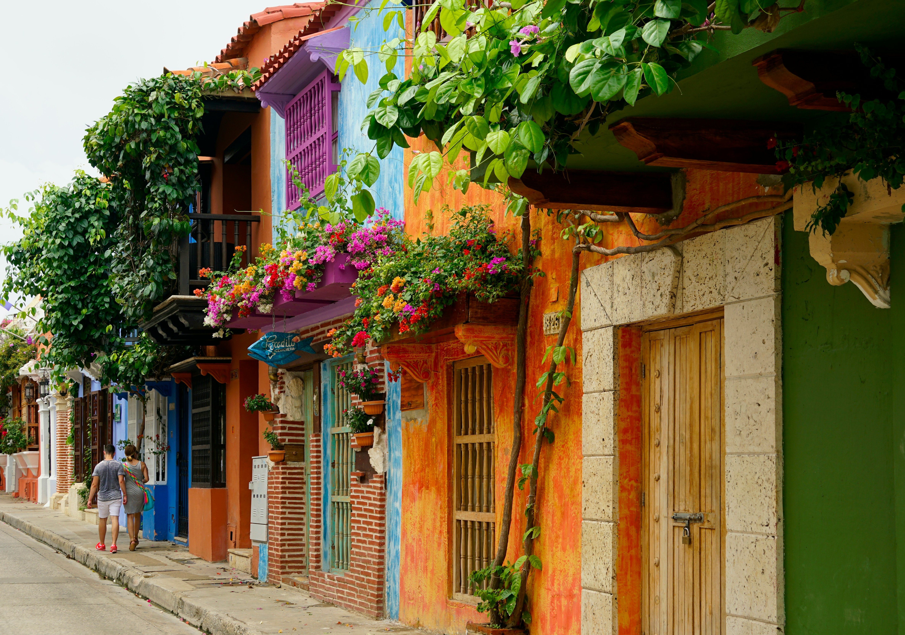
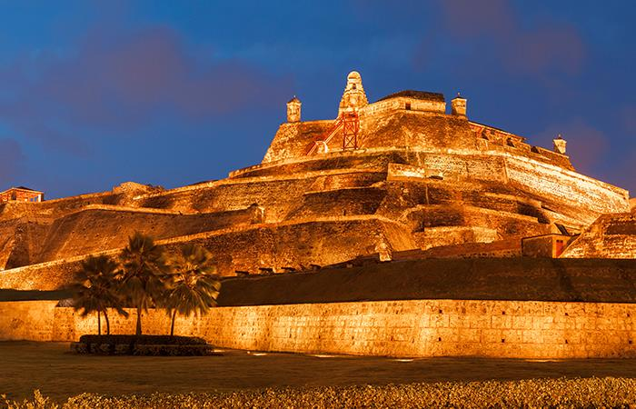
The Coffee Region
The Eje Cafetero — the Coffee Axis — runs through the central Andean range across the departments of Quindío, Risaralda, and Caldas. This is the territory that produces much of Colombia's arabica coffee, grown on steep volcanic slopes under the shade of plantain and guamo trees, harvested by hand throughout the year. The landscape is an architecture of cultivation: furrows of coffee plants following the contour lines of the mountains, punctuated by the vertical forms of the wax palm.
The town of Salento sits at the centre of the experience. Its painted wooden balconies, coloured in deep reds and yellows, lead uphill toward a viewpoint that opens across the Quindío valley. From Salento, the Valle de Cocora — a high valley at 2,400 metres — holds a forest of wax palms, Colombia's national tree, rising up to 60 metres from the cloud mist. The hike through the valley, past a cloud forest reserve and across wooden bridges over the Cocora river, is an encounter with the land at its most elemental.
The traditional fincas — coffee farms — offer direct engagement with the full process: from the ripe red cherry to the cupping table. Manizales, the department capital of Caldas, adds an urban dimension — a university city perched on a ridge, with views across the coffee landscape and proximity to Los Nevados National Park, where snowfields and volcanic peaks rise above the cloud line.


The Amazon
Colombia's Amazon covers the southeastern third of the country — a vast, largely roadless territory accessible primarily by river and by air. The regional capital, Leticia, sits on the riverbank at the meeting point of Colombia, Brazil, and Peru: a frontier town where the air is dense, the market is multilingual, and the Amazon River moves with a slowness that recalibrates time. Crossing the river to the Brazilian city of Tabatinga takes minutes; the contrast between the two border towns is itself an education in how nations inscribe themselves on the same landscape.
Upriver from Leticia, the car-free village of Puerto Nariño is one of the most ecologically coherent communities in the Amazon basin — its 8,000 residents depend on the river for food, transport, and culture, and the village has maintained a visible commitment to environmental stewardship. The Tarapoto lake system nearby supports one of the highest concentrations of pink river dolphins in Colombia, and the early morning hours on the water offer an encounter with a rare and unhurried presence.
Indigenous communities of the Tikuna, Yagua, and Cocama nations maintain traditions of craft, navigation, and ecological knowledge. Visits organised through community-run tourism programmes offer genuine exchange — not performance. The jungle lodges north of Leticia provide a base for guided night walks, birdwatching at dawn, and canopy observation.
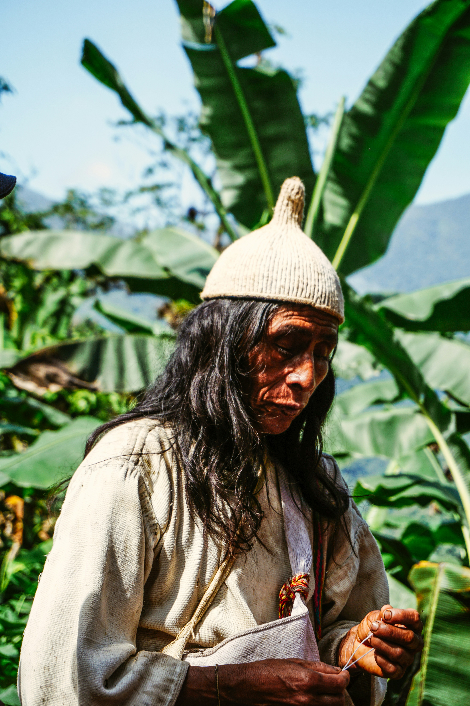

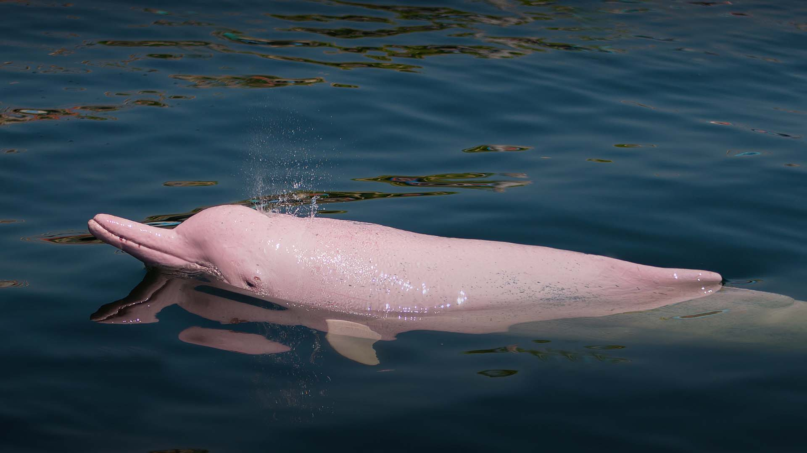
Bogotá
Bogotá sits on the Sabana, a high plateau of the Eastern Andes at 2,600 metres above sea level. The altitude is the first thing visitors encounter — the air thinner, the light clearer, the mornings cold. The city of eight million is divided by informal zones: the historic La Candelaria at its colonial core; the commercial corridors of Chapinero and Zona Rosa northward; and the peripheral comunas that extend toward the mountains, their brick walls painted with murals that document local histories.
The Museo del Oro — the Gold Museum — holds the world's largest collection of pre-Columbian gold work: more than 55,000 pieces from indigenous cultures across Colombia. It is one of the essential cultural encounters in the Americas. On the same hill that holds La Candelaria, Monserrate rises a further 500 metres above the city, accessible by cable car or funicular, offering the most complete view of the Sabana and the urban grid below.
Bogotá's contemporary dimension is visible in the art districts of La Perseverancia and La Macarena — neighbourhoods where the mural tradition is particularly dense — and in the Paloquemao market, where the full abundance of Colombian agriculture arrives before dawn. The city rewards slow walking and unhurried observation.


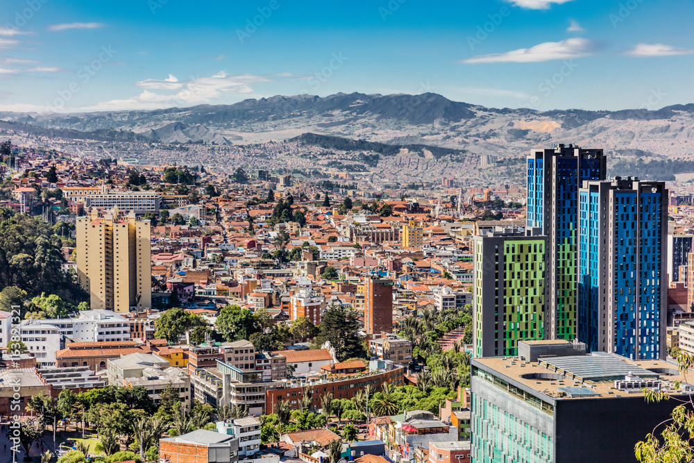
Medellín
Medellín occupies the Aburrá valley — a narrow Andean corridor at 1,500 metres, warmer than Bogotá, denser in texture. The city's story is one of profound transformation: from the centre of Colombia's most acute violence in the 1980s and early 1990s to a city that has invested deliberately and durably in public space, education, and infrastructure. That transformation is not a marketing position — it is visible in the fabric of the city, and in the way residents speak about the place they chose to stay and rebuild.
The Metrocable Lines K and L connect the central valley to the hilltop comunas, making visible the neighbourhoods — La Aurora, Santo Domingo, Moravia — that were once physically and economically marginalised. The cable ride itself is an education in Medellín's geography and its history. El Poblado, the neighbourhood of restaurants, boutiques, and parks, offers comfort and ease; Laureles, westward across the river, offers a quieter, more residential encounter with local daily life.
An hour east of the city, Guatapé sits on a reservoir created by Colombia's largest hydroelectric dam. El Peñol — the great rock that rises 200 metres from the reservoir surface — can be climbed via 740 steps cut directly into the granite. The view from the summit extends across an archipelago of reservoir islands, forested peninsulas, and the surrounding mountains. The town of Guatapé below is notable for its zócalos — the painted relief panels on the lower exterior walls of every building, each depicting the history or character of the household within.
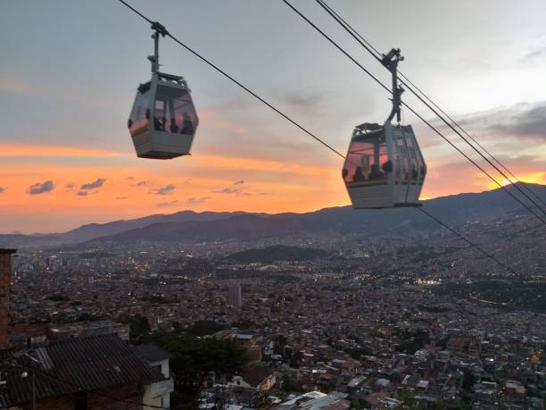
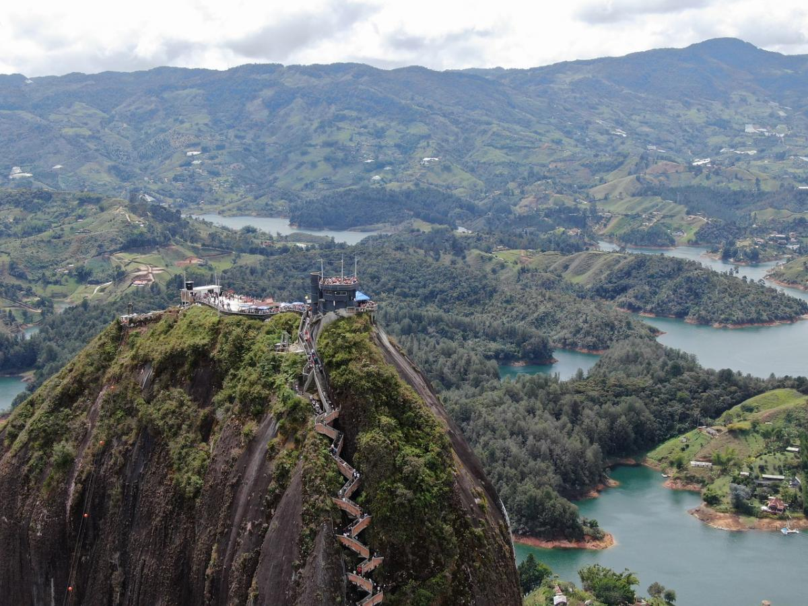
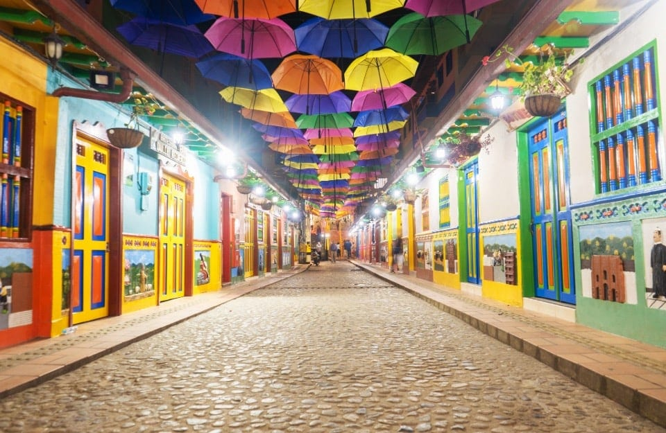
San Andrés & the Caribbean Coast
San Andrés is a coral island of Colombian sovereignty set in the southwestern Caribbean, closer geographically to Nicaragua than to mainland Colombia. Its waters — the Sea of Seven Colours — range from clear turquoise at the reef edge to deep cobalt in the open channels, the gradients visible from the air and from the cliff walks of the island's eastern coast. The island has been inhabited continuously since the seventeenth century by Raizal people of African and British descent, whose Creole language and Baptist tradition create a cultural character distinct from any other part of Colombia.
Johnny Cay, a small coral islet three kilometres offshore, offers the most complete reef diving in the archipelago — visibility regularly exceeding 30 metres, with brain coral formations, parrotfish, turtles, and nurse sharks in the shallows. The diving sites of La Piscinita and El Cañón are accessible to beginners; Blue Diamond and the wall dives of the eastern reef require open-water certification.
Providencia, 90 kilometres to the north, is San Andrés's smaller and less developed companion island — accessible by prop plane or by fast ferry. Its coral reef, Providencia Sea Flower, is listed as a UNESCO Biosphere Reserve and holds one of the largest barrier reefs in the Western Hemisphere. The island's pace is entirely its own: unhurried, rooted in community, and indifferent to performance.
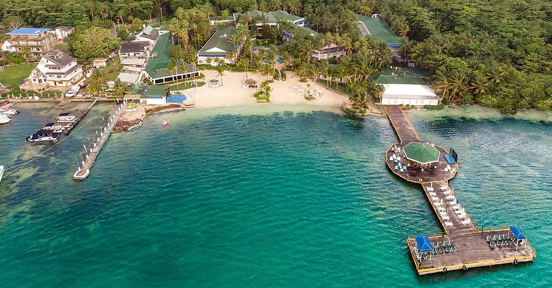
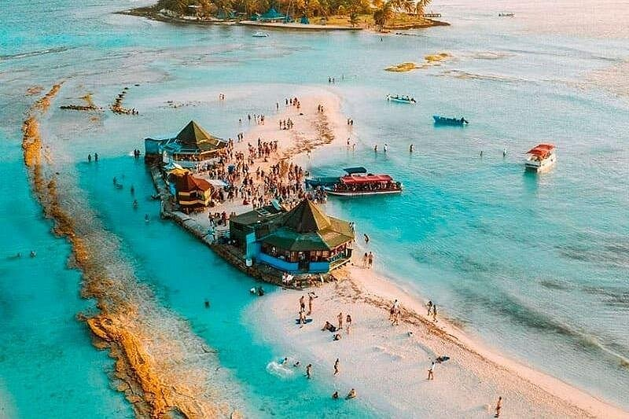
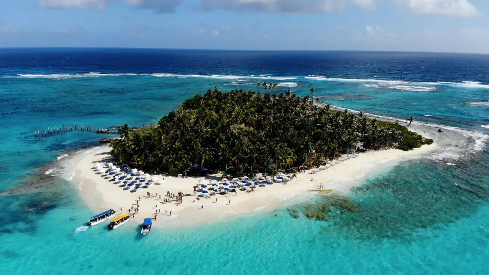
Ready to choose your territory?
Each destination is also a route. View our curated itineraries or contact us to design something specific.